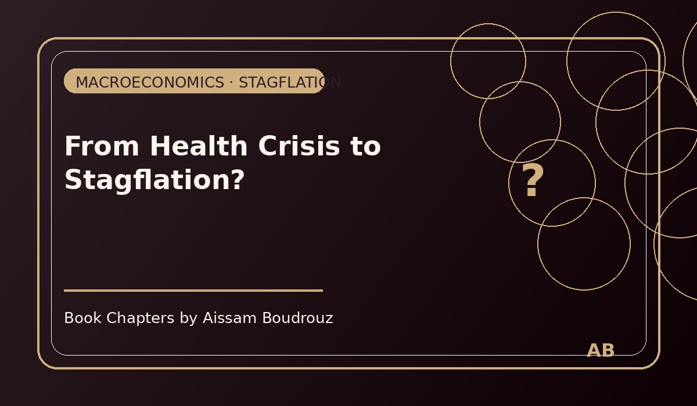

From Health Crisis to Stagflation?
It was early 2022, and the world was trying, once again, to stand up straight after the storm.
Borders were open again, flights were full, cafés were noisy, and for the first time in two years, people began to talk about the future instead of the pandemic.
But the optimism didn’t last long.
Prices were rising everywhere — faster than anyone had expected.
Fuel, gas, wheat, cooking oil — everything was climbing.
The world’s biggest economies were watching inflation numbers they hadn’t seen in decades.
The data spoke for itself:
fuel and gas prices up by nearly 30%,
basic food products up by 32% compared to the previous year, according to the FAO.
And yet, economic growth was slowing down.
Page 1 – The new fear
That strange combination — high inflation with weak or negative growth — began to remind economists of something they hadn’t said aloud in years: stagflation.
The last time the world faced it was in the 1970s, during the great oil crisis.
Back then, factories were closing, prices were soaring, and unemployment kept rising — the perfect storm that broke the old economic models.
Now, half a century later, people were asking the same question again:
“Are we heading back there?”
Page 2 – Reading the signs
I remember looking at a chart published by DWS, one of the largest investment firms in the U.S.
It showed the long dance between economic growth and inflation since 1950.
In that chart, the “gap” between the two lines — growth and inflation — tells the story.
When growth falls and inflation rises, the gap widens — and that’s where stagflation lives.
For now, the U.S. and other economies were still far from the chaos of the 1970s.
But the signs were there.
If the imbalance between supply and demand continued — if production couldn’t catch up, and if energy shortages persisted — the gap could widen again.
And once it starts widening, it’s hard to stop.
Page 3 – The economist’s dilemma
To fight inflation, governments usually raise interest rates or reduce money supply.
But to fight low growth, they have to do the opposite — inject more money into the economy to stimulate demand.
In other words, one problem’s solution often feeds the other.
Add more money → you risk more inflation.
Cut spending → you risk slower growth.
It’s like trying to drive a car with one foot on the gas and one on the brake.
Page 4 – Between logic and life
As I read the reports and watched the graphs, I realized something simple yet uncomfortable:
Economics, at its core, is about trying to make sense of human behavior — and humans are rarely rational.
Markets panic.
People overreact.
Predictions fail.
And just when you think you understand the pattern, the pattern changes.
That’s why, by the end of that day, as I closed my laptop, I smiled and whispered to myself:
“All scenarios are possible
in a science that doesn’t believe in rationality.”